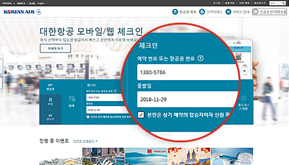
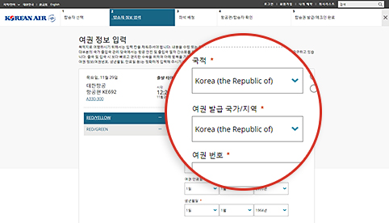
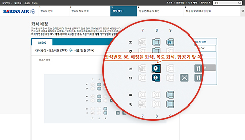
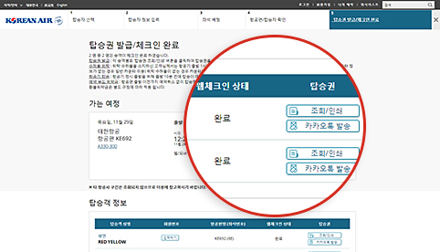

좌석 선택부터 탑승권 발급까지 빠르고 간편하게!
모바일/웹 체크인
공항에서 줄 서지 말고 바로 입장해 여유 있는 시간을 즐기세요!
 국내선 항공기 출발 20분 전까지, 국제선 항공기 출발 1시간 전까지 출발장에 입장하지 않을 경우, 탑승이 취소됩니다.
국내선 항공기 출발 20분 전까지, 국제선 항공기 출발 1시간 전까지 출발장에 입장하지 않을 경우, 탑승이 취소됩니다.이용 방법

-

Step 1 예약찾기
- 로그인하면 수속 가능한 예약을 바로 확인할 수 있습니다. 예약 시 스카이패스 번호를 미리 입력해주세요.
- 예약이 확인되지 않거나 비회원인 경우 예약번호 또는 항공권번호, 승객 성명과 출발일을 입력하세요.
 -

Step 2 여행서류 입력 (국제선)
- 출국 및 입국 시 보다 빠르고 편리한 수속을 위하여 여행서류 정보를 입력하여 주세요. 정확한 정보를 입력하지 않으실 경우, 출도착지 사전 심사 결과에 따라 체크인이 불가합니다.
- 모바일 체크인 시, 여권 스캔 기능으로 보다 더 편리하게 이용하실 수 있습니다.
 -

Step 3 좌석 선택
- 선호 좌석을 선택하여 주세요.
- 회원 아이디로 로그인한 경우, 혹은 비회원 예매 시 설정한 비밀번호가 있는 경우, 좌석 변경이 가능합니다.
 -

Step 4 체크인 완료
- 수속 완료 후 승객별로 탑승권 (또는 교환증)을 발급하여 주세요. 탑승권은 카카오톡으로도 전송받을 수 있습니다. 카카오톡 수신 불가 시 문자 메시지로 발송됩니다.
- 마감시간 전까지 탑승권 재발급, 수속 취소 등이 가능합니다.

체크인 후 공항 이용 방법
-

01 모바일/웹 체크인 및 탑승권 발급
- 출발 당일, 모바일 탑승권 또는 출력하신 탑승권을 소지하고 공항에 나오시기 바랍니다.
-

02 공항 도착
탑승권 발급 승객
- 부칠 짐이 없을 때 : 탑승권을 가지고 바로 출발장으로 이동하세요.
-
부칠 짐이 있을 때 : 탑승권을 가지고 수하물 전용 카운터 (참조 2) 에서
짐을 부치고, 출발장으로 이동하세요.
(참조 2) 인천공항에서 자동 수하물 위탁 카운터(D1~D17, E1~E17)를 이용하시면 더욱 편리하고 빠르게 수하물 처리가 가능합니다.
교환증 발급 승객
- 먼저 전용 카운터에서 실물 탑승권을 받아 주세요. 수하물 처리도 탑승권을 교환할 때 처리하실 수 있습니다.
-

03 보안 검색 및 출국 심사
- 탑승권을 보안 검색 요원에게 보여 주시고 보안 검색을 받으세요.
- 유효한 여권과 여행 서류를 준비하여 출국 심사를 받으세요.
-

04 항공기 탑승
- 탑승권을 탑승구 직원 및 기내 승무원에게 보여 주시고 항공기에 탑승하세요.